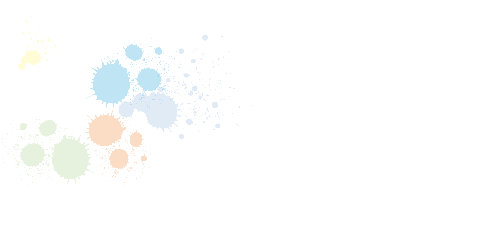
| home |
| projects |
| reflections |
| resume |
| contact |
| Gesture Recognition |
| Telepresence in AR |
| n-operating system |
| audiovision for the blind |
| Fractals |
| GhostRacer |
| thoughts |
| art |
| music |
| blog |
WARNING : This site is a little heavy owing to a decent trade-off for its looks and feel. So please WAIT till it loads (best use GChrome) and reload if transitions arent smooth !
Me: I am Nishanth Prakash, a junior undergrad at National Institute of Technology Karnataka pursuing B.Tech in Computer Science and Engineering.
Philosophy behind the love for Computer Science (chauvinistic) :
I take great pleasure in questioning things in life. The most important questions :
a. WHY : from a logical perspective this question can pretty much never be solved. If indeed ultimate answers to this question do exist that would only imply our world is inconsistent (think Godel) much the same way as the statement "This statement is false." Wandering around with this question pretty much leads us nowhere. I m not so much of a believer of a universal operator of a unified law of physics, I think thats plain bullshit for the fact that if it did exist it would either imply hard determinism or randomness => NO FREEWILL ! :0 Physics only models what happens in nature describing the isomorphism that exists between numbers and nature. This more often simply involves identifying features (in nature) that relate to each other and a bit of "curve fitting" --> Clearly a subset of "e. HOW" (how to describe nature more usefully*)
b. WHAT : Interesting but not as interesting as d. because of the disappointing ratio of answered to unanswered which tends to zero no matter how much we progress** (progress ? much like a. ? ) in this field...
c. WHO : Answer - I (the only truth we can ever know)
d. WHERE : Answer - internet (you can find everything in here) ...lol ;)
e. HOW : Ah ! Now this is living the life. How ? How to score an A ? How to win the Nobel Prize ? How to play the guitar ? How to become the worlds richest man ? How to Describe things in Nature with good amount abstraction so that descriptions can be useful* ? How to answer the above questions of life ? How to create the whole Universe ? Living life is implementing algorithms in a continuum. This is what gives the b.WHAT a meaning through application : living life. This is Computer Science ! (wish it had a fancier name to sound more like "This is Sparta")
*useful : the most agreed upon meaning of "useful." I am yet to find a meaning to this word though ! Makes me wonder how much we have progressed** from the early ages of mankind using these useful things.
**progress : the meaning of this word (or of anything at all for that matter) lies in the relationship you have with the word. Here I mean progress in terms of the WHATs and WHYs of life and not just Longevity (let alone happiness etc.)
Inspiration: SICP, GEB, TAOCP, etc.
"Mathematics provides a framework for dealing precisely with notions of 'what is.' Computation provides a framework for dealing precisely with notions of 'how to' ."
- Harold Abelson and Gerald Jay Sussman with Julie Sussman
THIS SITE IS CURRENTLY UNDER (RE)CONSTRUCTION
For a less formal description about me check: http://about.me/nishanthprakash
Me: I am Nishanth Prakash, a junior undergrad at National Institute of Technology Karnataka pursuing B.Tech in Computer Science and Engineering.
Philosophy behind the love for Computer Science (chauvinistic) :
I take great pleasure in questioning things in life. The most important questions :
a. WHY : from a logical perspective this question can pretty much never be solved. If indeed ultimate answers to this question do exist that would only imply our world is inconsistent (think Godel) much the same way as the statement "This statement is false." Wandering around with this question pretty much leads us nowhere. I m not so much of a believer of a universal operator of a unified law of physics, I think thats plain bullshit for the fact that if it did exist it would either imply hard determinism or randomness => NO FREEWILL ! :0 Physics only models what happens in nature describing the isomorphism that exists between numbers and nature. This more often simply involves identifying features (in nature) that relate to each other and a bit of "curve fitting" --> Clearly a subset of "e. HOW" (how to describe nature more usefully*)
b. WHAT : Interesting but not as interesting as d. because of the disappointing ratio of answered to unanswered which tends to zero no matter how much we progress** (progress ? much like a. ? ) in this field...
c. WHO : Answer - I (the only truth we can ever know)
d. WHERE : Answer - internet (you can find everything in here) ...lol ;)
e. HOW : Ah ! Now this is living the life. How ? How to score an A ? How to win the Nobel Prize ? How to play the guitar ? How to become the worlds richest man ? How to Describe things in Nature with good amount abstraction so that descriptions can be useful* ? How to answer the above questions of life ? How to create the whole Universe ? Living life is implementing algorithms in a continuum. This is what gives the b.WHAT a meaning through application : living life. This is Computer Science ! (wish it had a fancier name to sound more like "This is Sparta")
*useful : the most agreed upon meaning of "useful." I am yet to find a meaning to this word though ! Makes me wonder how much we have progressed** from the early ages of mankind using these useful things.
**progress : the meaning of this word (or of anything at all for that matter) lies in the relationship you have with the word. Here I mean progress in terms of the WHATs and WHYs of life and not just Longevity (let alone happiness etc.)
Inspiration: SICP, GEB, TAOCP, etc.
"Mathematics provides a framework for dealing precisely with notions of 'what is.' Computation provides a framework for dealing precisely with notions of 'how to' ."
- Harold Abelson and Gerald Jay Sussman with Julie Sussman
THIS SITE IS CURRENTLY UNDER (RE)CONSTRUCTION
For a less formal description about me check: http://about.me/nishanthprakash
Realtime Gesture Recognition using Microsoft Kinect
This project was done by me for an internship at India Innovation Labs (IIL), Bangalore.In this project we use Microsoft Kinect which is a 3D camera that works on structured light to give us depth information apart from the usual RGB from a normal camera. Using the OpenNI and NITE libraries we track positions of certain parts of the body. The gestures are tracked.j and recognized using Artificial Neural Networks implemented using the FANN library. The whole project was done on the ROS platform for efficient interaction between different nodes. Since Gesture Recognition is closely related to Activity Recognition this project can also be used for Recognition of Activity by training of the Activity. This was to be further integrated with a project undertaken at IIL on building a fully autonomous Humanoid Robot. Some screenshots :

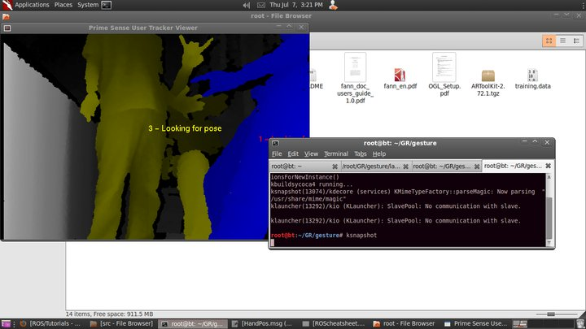
This project was done by me for an internship at India Innovation Labs (IIL), Bangalore.In this project we use Microsoft Kinect which is a 3D camera that works on structured light to give us depth information apart from the usual RGB from a normal camera. Using the OpenNI and NITE libraries we track positions of certain parts of the body. The gestures are tracked.j and recognized using Artificial Neural Networks implemented using the FANN library. The whole project was done on the ROS platform for efficient interaction between different nodes. Since Gesture Recognition is closely related to Activity Recognition this project can also be used for Recognition of Activity by training of the Activity. This was to be further integrated with a project undertaken at IIL on building a fully autonomous Humanoid Robot. Some screenshots :
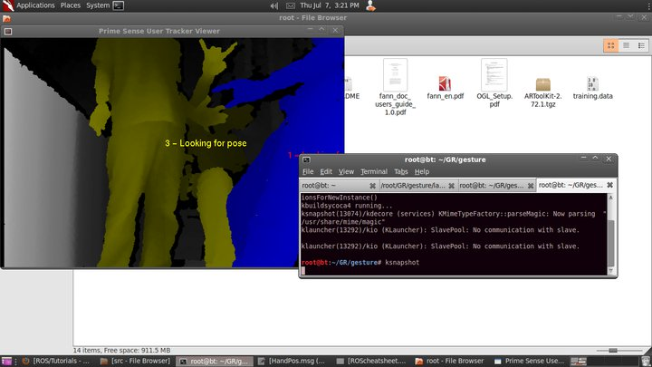
Holographic Telepresence in Augmented Reality using Microsoft Kinect
This project, lead by me is sponsored by Diode SIG, IEEE-NITK. In this project Kinect's RGB and Depth information of what it "sees" is processed to track and extract the point cloud of a human and reconstruct it as a mesh/3D model which is then rendered on an AR marker. (Status : 90% complete) Some screenshots:
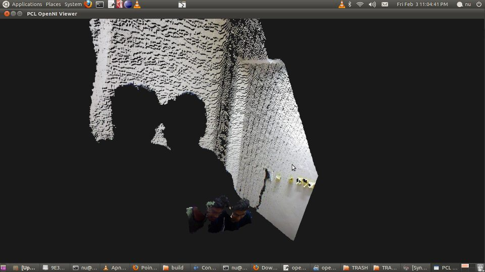
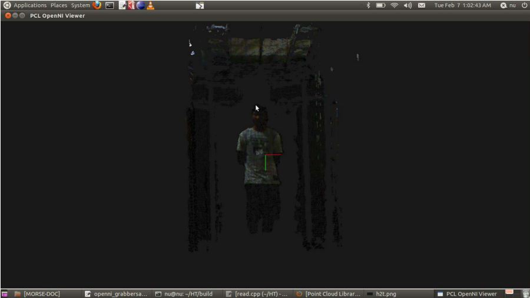
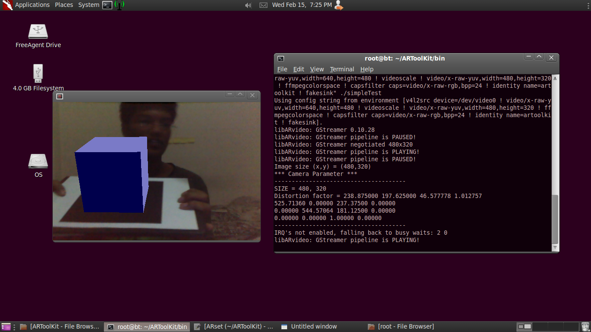
This project, lead by me is sponsored by Diode SIG, IEEE-NITK. In this project Kinect's RGB and Depth information of what it "sees" is processed to track and extract the point cloud of a human and reconstruct it as a mesh/3D model which is then rendered on an AR marker. (Status : 90% complete) Some screenshots:
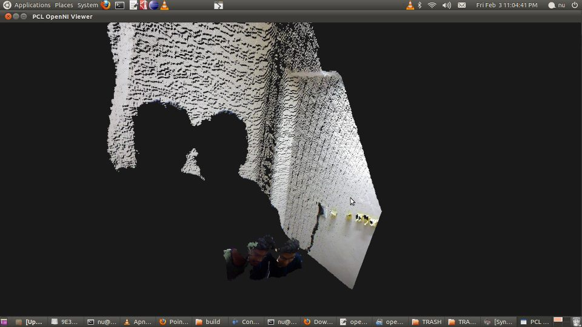
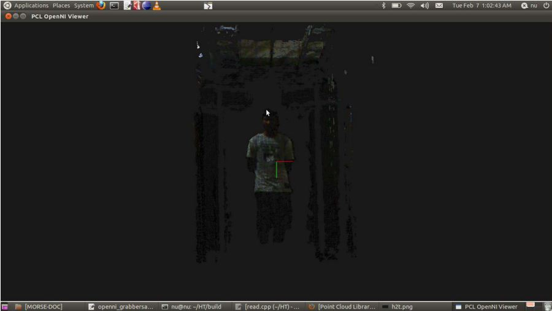
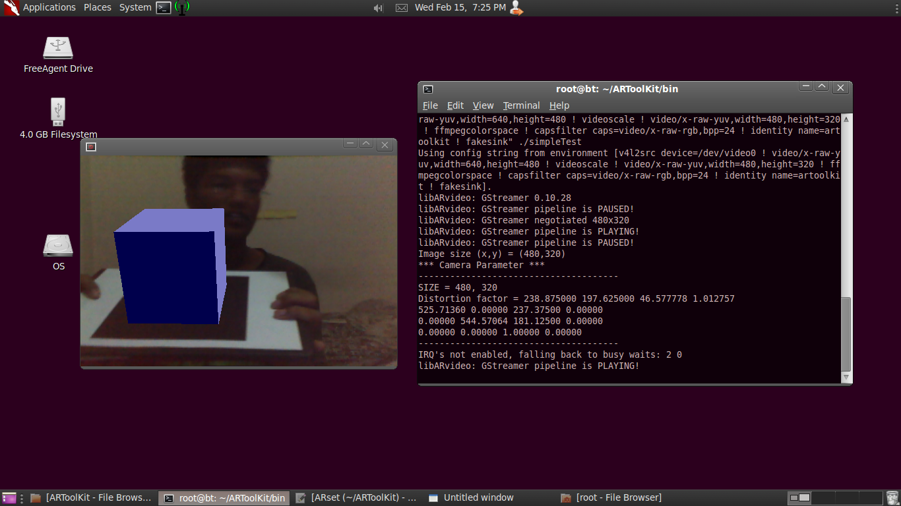
GhostRacer game using Gesture Recognition using a colored cuboidal cardboard box as bike handle
This project was done in my for a Computer Graphics course in my 2nd year of Comp. Engineering. A 'controller-free gaming and entertainment experience', based around a webcam-style add-on peripheral, it enables users to control and interact with the game without the need to touch a game controller,through a Natural User IInterface (NUI) using gestures (an interface that 'effectively becomes invisible').The 3D game was designed using OpenGL, one of the leading graphics development API. The NUI was implemented using OpenCV, a leading image processing (Computer Vision) library. 3D sound was implemented using OpenAL. Some screenshots:


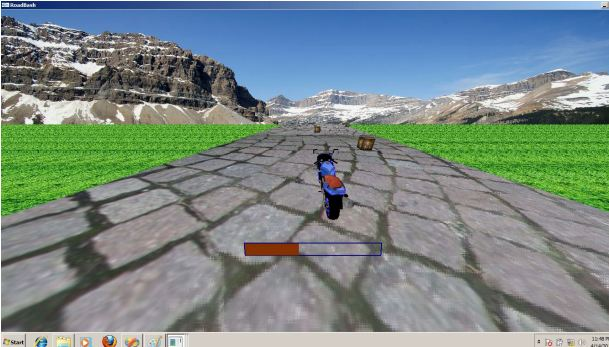
This project was done in my for a Computer Graphics course in my 2nd year of Comp. Engineering. A 'controller-free gaming and entertainment experience', based around a webcam-style add-on peripheral, it enables users to control and interact with the game without the need to touch a game controller,through a Natural User IInterface (NUI) using gestures (an interface that 'effectively becomes invisible').The 3D game was designed using OpenGL, one of the leading graphics development API. The NUI was implemented using OpenCV, a leading image processing (Computer Vision) library. 3D sound was implemented using OpenAL. Some screenshots:
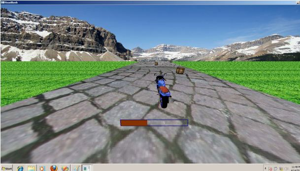
N - Operating System
This project was done using online tutorials and help from various forums like osdev.org and osdever.net and invovled building a basic Operating System like unix.
This project was done using online tutorials and help from various forums like osdev.org and osdever.net and invovled building a basic Operating System like unix.
Drishti: Vision for the blind using MS Kinect
This project is still in conceptual stages of development.
This project is still in conceptual stages of development.
Applications of Fractals on Biorhythms
I worked on this for my internship at IISc. For more details on this please contact me.
I worked on this for my internship at IISc. For more details on this please contact me.
Yet to be updated.
Please contact me for through mail for my updated CV.
email : nishanth[MY LAST NAME]20@gmail.com
[MY FIRST NAME]@nitk.ac.in
[MY FIRST NAME]@nitk.ac.in